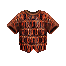
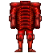
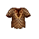
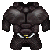
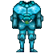

| Picture | Name | Description | What it does | Where it's from |
 |
Fungus armor | A suit of made from interwoven pads of fungus fiber | +2 | From skeleton kings |
 |
Bowman leather | A suit of leather armor over which are fastened many wooden shingles |
+3, Fire/Ice prot |
From bowmen |
 |
Beetle scales | A vest made from the fire red scales of a giant beetle | 3/0, lvl 17 Psimirror |
Kill and tan Beetle |
|
Psi tower beetle scales | A vest made from the fire red scales of a giant beetle | 0/5, Evil aligned |
Kill Beetle scaler crit in psi tower |
|
Psi tower beetle scales | A vest made from the fire red scales of a giant beetle | 0/6, Fire prot, Shockwave prot, Evil aligned |
Kill Beetle scaler crit in psi tower |
 |
Swordman leather | A suit of leather armor | +4, Fire/Ice prot |
From swordmen |
| Nin padded swordman leather | A suit of leather armor, heavily sewn and strengthened with a layer of heavy, fibrous scales | 0/5, Fire/Ice prot |
After padding with nin scales | |
 |
Black dragon armor | A vest made of the jet-black scales of a dragon | +1, +2 agil, Acid prot |
Random from npc's or from killing Arun |
 |
Bear fur | A cloak skinned from the hide of a large bear | 3/3, +1 str, Fire/Ice prot |
Random from npc's |
 |
Small yeti | A heavy fur coat made from the hide of a small yeti | 0/2, Fire/Ice prot |
Kill and tan a small yet |
|
Large yeti | A heavy fur coat made from the hide of a large yeti | 0/4, Fire/Ice prot |
Kill and tan a Large yetis |
|
Sassy fur | A heavy fur coat made from the hide of a large yeti | 0/7 +200 hp Base AC of 85 Barb only |
Kill and tan DeathSasquatch |
 |
Beetle fullplate | A suit of full-plate armor made of an exotic metal overlaid with inter-locking rows of chitinious scales | 0/5, +4 str, cuts psi by 1/3, G/G aligned |
Kill and tan Beetle, trade scales in timmy town. |
| Nin padded beetle fullplate | - | - | Bring beetle fullplate and nin scales to nin padder inside nin lair. | |
 |
Ningi scales | A vest made from the shimmering scales of a huge sepent |
250 Fire/Ice Prot Base AC of 95 |
Kill and tan Ningizidda |
| Padded Ningi scales | A vest made from the shimmering scales of a huge sepentand lined with strips of yeti fur |
0/8 550 Fire/Ice Prot Base AC of 75 |
Pad Ningi scales with large yeti fur | |
| Padded Ningi scales | A vest made from the shimmering scales that has been strengthened by the addition of one layer of serpent scales |
250 Fire/Ice Prot Base AC of 105 |
Pad Ningi scales with another ningi scales | |
 |
Sea serpent scales | The scales of a rattler snake | Direct protection against Protstun Fire prot |
From tanning a sea serpent |
 |
Leviathan scales | 3/3, Prot from fire/ice |
From tanning a leviathan north of the swamps | |
|
Padded leviathan scales | 0/6, Prot from ice |
From padding leviathan scales with yeti fur | |
 |
Silver dragon scales | A vest made of dull silver dragon scales | +5, Lightning prot |
Kill and tan Sd in the gauntlet |
|
Psi tower silver dragon scales | A vest made of dull silver dragon scales | +5, Lightning prot |
KIll Sd scaler in psi tower |
 |
Black dragon scales | A vest made of deep black dragon scales | 0/6, +2 agil, acid prot |
Kill and tan Bd in the gauntlet |
| Psi tower black dragon scales | A vest made of deep black dragon scales | 0/6, +2 agil, acid prot |
Kill Bd scaler in psi tower | |
 |
Mana green dragon scales | A vest made of bright green dragon scales | 0/2, acid prot |
Kill and tan Mama green dragon in the gauntlet |
|
Mana green dragon scales | A vest made of the sea-green scales of a large dragon. | 0/2, acid prot |
Kill and tan one of Vanidors pet green dragons |
|
Psi tower green dragon scales | A vest made of bright green dragon scales | 0/7, acid prot |
Kill Elance scaler in psi tower. |
 |
Gold dragon scales | A vest made from the irridescent gold scales of a huge dragon | 0/7, +1 str, Fire/Ice prot, Ec prot |
Kill and tan Gd in the gauntlet |
|
Psi tower gold dragon scales | A vest made from the irridescent gold scales of a huge dragon | 7/0, +1 str, Fire/Ice prot, Ec prot |
kill Gd scaler in psi tower |
 |
Vanidor plate | A body suit of blue fullplate armor, constructed of the finest deplurium metals of the land | 6/6, +3 Str, +3 Agil, Cuts psi |
Kill and search Vanidor |
| Thanks goes to Tanuvien for additional information on padded nin armor, as well as corrections regarding psi tower gold dragon scales. Additional thanks to Scyrac for information regarding several items. |
||||